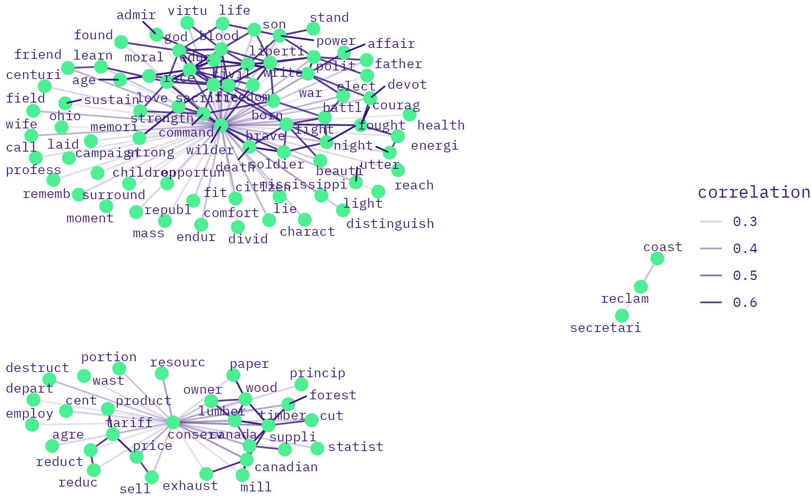
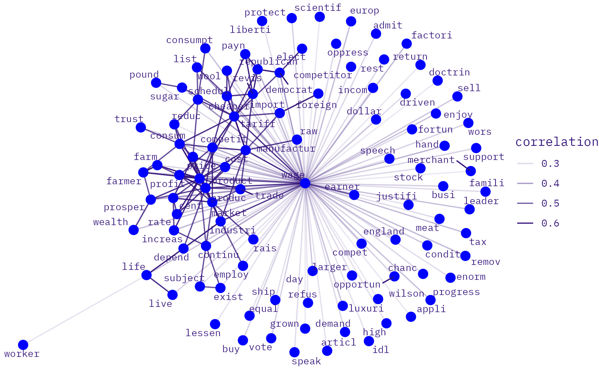

3 1905
3.2 10-yr
3.3 5-yr
3.3.1 enviro
3.3.1.3 co-occurrence
3.3.1.3.1 1905
enviro keywords in enviro speeches
enviro keywords in labor speeches
enviro keywords in enviro-labor speeches 
3.3.1.3.2 1910
<>enviro keywords in enviro speeches
enviro keywords in labor speeches
enviro keywords in enviro-labor speeches
3.3.2 labor
3.3.2.3 co-occurrence
3.3.2.3.1 1905
labor keywords in labor speeches
labor keywords in enviro-labor speeches
3.3.2.3.2 1910
labor keywords in labor speeches
labor keywords in enviro-labor speeches 
3.3.3 enviroLabor
3.3.3.3 co-occurrence
3.3.3.3.1 1905
enviroLabor keywords in labor speeches
enviroLabor keywords in enviroLabor speeches
3.3.3.3.2 1910
enviroLabor keywords in labor speeches
enviroLabor keywords in enviroLabor speeches